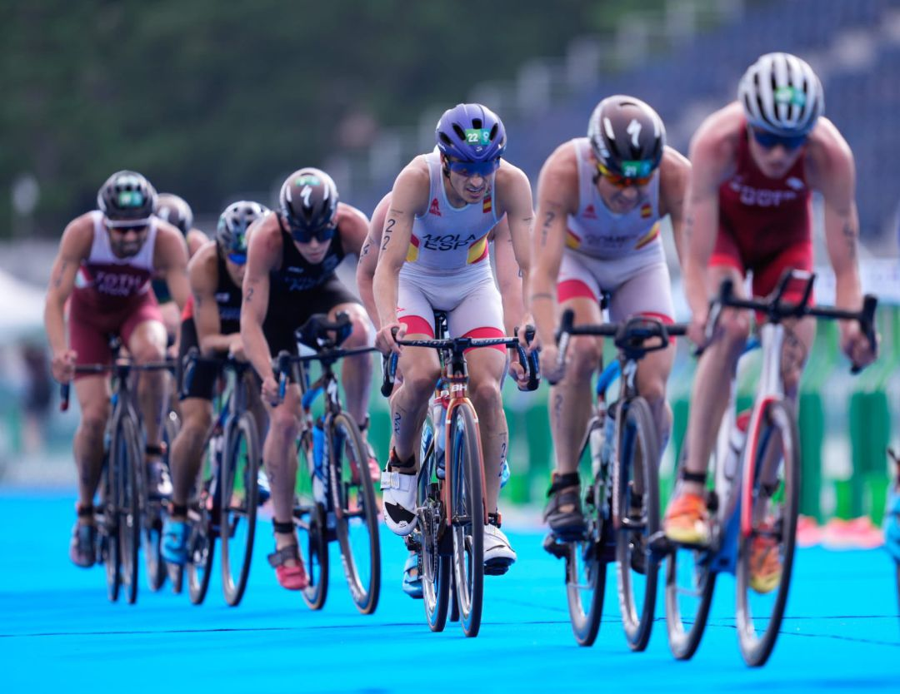

Escrito por Iker Roca | 21 de mayo de 2024
La lista definitiva de participantes para el triatlón olímpico en los próximos Juegos Olímpicos de París 2024 ha sido anunciada, y no podría ser más emocionante. Este evento reunirá a los mejores triatletas del mundo, todos compitiendo por el oro en uno de los escenarios más icónicos del deporte.
Los Juegos Olímpicos de París 2024 prometen ser un espectáculo sin igual, y el triatlón será uno de los eventos más esperados. Con un recorrido que abarca natación en el Sena, ciclismo a través de las históricas calles de París y una carrera a pie que culmina en el famoso Champs-Élysées, los atletas enfrentarán un desafío único e inspirador.
Entre los participantes se encuentran campeones mundiales y olímpicos, así como nuevas estrellas emergentes del deporte. Cada uno de ellos ha demostrado una dedicación y un talento extraordinarios, y están listos para dar lo mejor de sí en la competencia más prestigiosa del mundo.
La lista incluye a algunos de los nombres más destacados del triatlón. Entre ellos, el británico Alistair Brownlee, doble medallista de oro olímpico, y la estadounidense Katie Zaferes, actual campeona mundial, quienes buscarán añadir más logros a sus impresionantes carreras.
También están presentes los españoles Mario Mola y Javier Gómez Noya, ambos con múltiples títulos mundiales y una gran experiencia en competiciones internacionales. La participación de estos atletas garantiza una competencia de alto nivel y un espectáculo deportivo inolvidable.
Además de los veteranos, el triatlón olímpico de París 2024 contará con jóvenes promesas que han demostrado un rendimiento excepcional en los últimos años. Estos atletas representan el futuro del triatlón y están listos para desafiar a los más experimentados en la búsqueda del oro.
Entre las nuevas estrellas se encuentran el noruego Kristian Blummenfelt, quien ha dominado varias competiciones recientes, y la británica Georgia Taylor-Brown, cuya carrera ascendente la ha posicionado como una de las favoritas en la rama femenina.
Con la lista definitiva de participantes confirmada, las expectativas para el triatlón olímpico de París 2024 son altísimas. Los organizadores están ultimando los detalles para asegurar un evento seguro y exitoso, y los atletas continúan con sus intensos entrenamientos para llegar en su mejor forma a la competencia.
Los aficionados al triatlón y al deporte en general ya están marcando sus calendarios para no perderse ni un momento de esta emocionante prueba. Las calles de París estarán llenas de espectadores animando a los triatletas, creando una atmósfera de celebración y deportividad.
La comunidad del triatlón ha recibido la noticia de la lista definitiva con gran entusiasmo. Las redes sociales se han llenado de mensajes de apoyo y emoción, mientras los expertos del deporte analizan las posibles estrategias y resultados.
Los Juegos Olímpicos de París 2024 prometen ser un evento histórico, y el triatlón será, sin duda, uno de los puntos culminantes. Con una alineación de atletas de clase mundial y un escenario incomparable, este evento quedará en la memoria de todos los aficionados al deporte.
Referencia: Comité Olímpico Internacional.